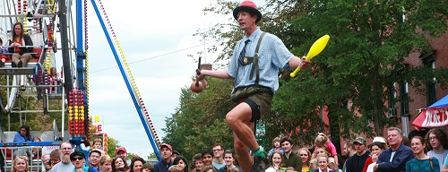

It is our duty and responsibility to provide parents and their young children with optimal fun and entertainment at Ithaca's Apple Festival. Kids will love going on the carnival rides, which include a ferris wheel, a minituature roller coaster, a carousel, and more. There is also a booth where children can have balloon animals made for them, and can make crafts at other booths. Kids can see the goats and learn how fiber is made with Laughing Goat Fiber Farm. Furthermore, there are several games that parents will enjoy playing with their children, some of which may lead to prizes. Parents also have the opportunity to enter raffle tickets for the chance of winning a raffle. Please stop by and be prepared with more fun surprises!

